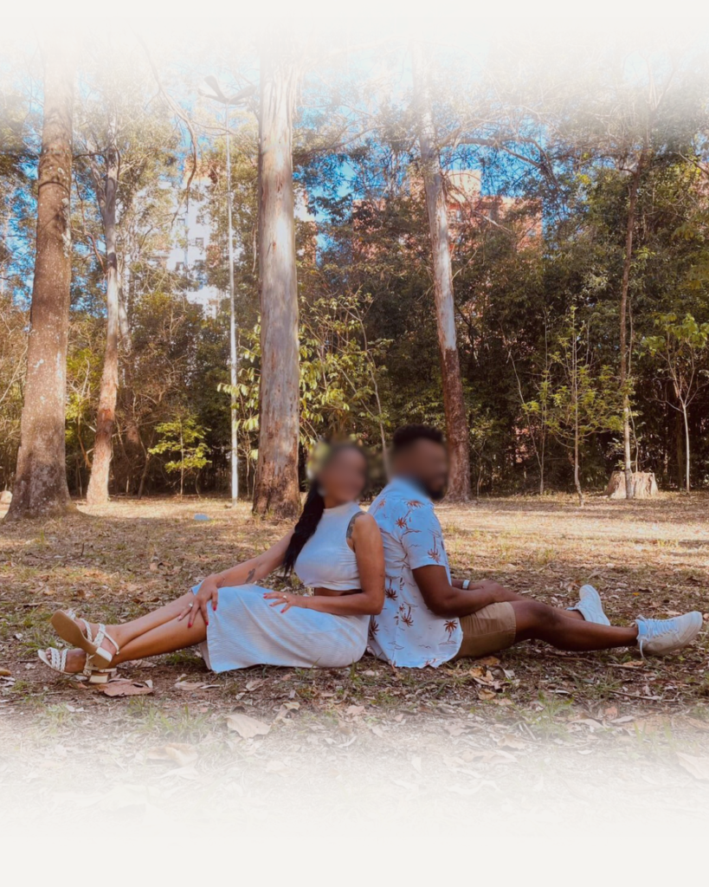
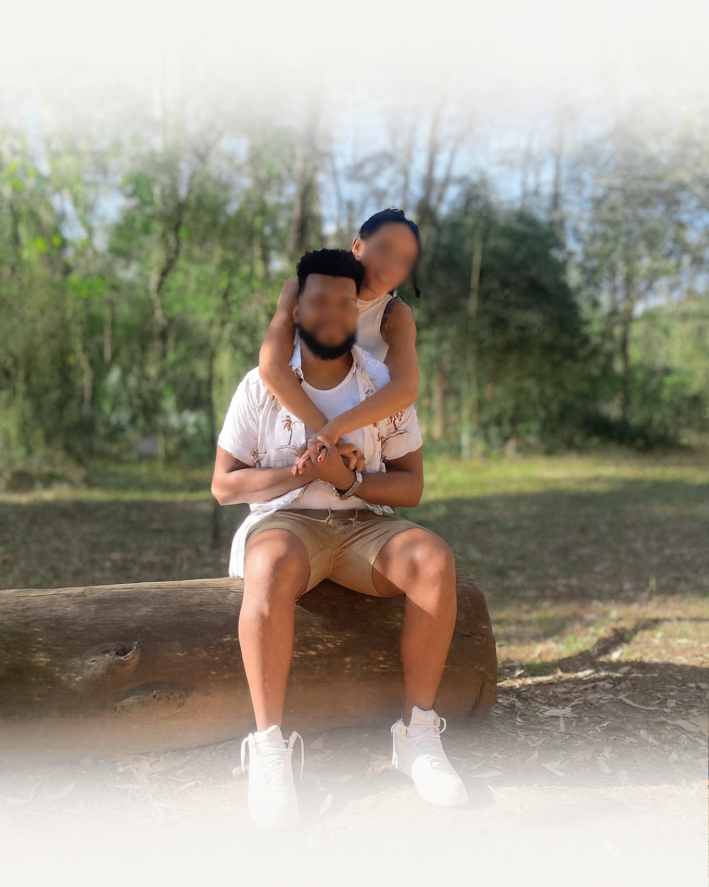
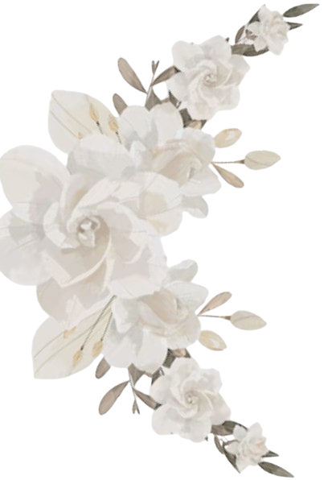
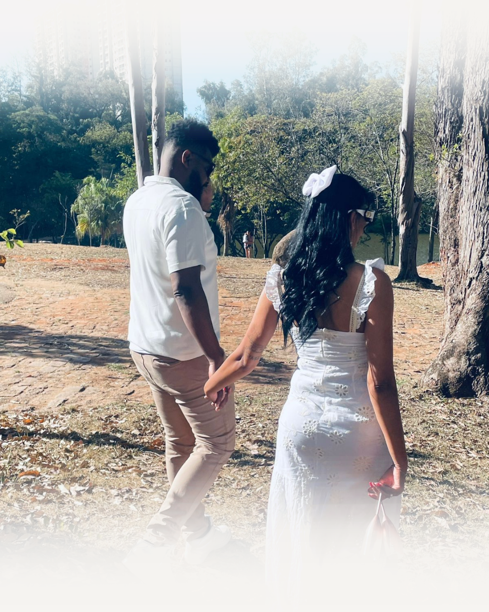
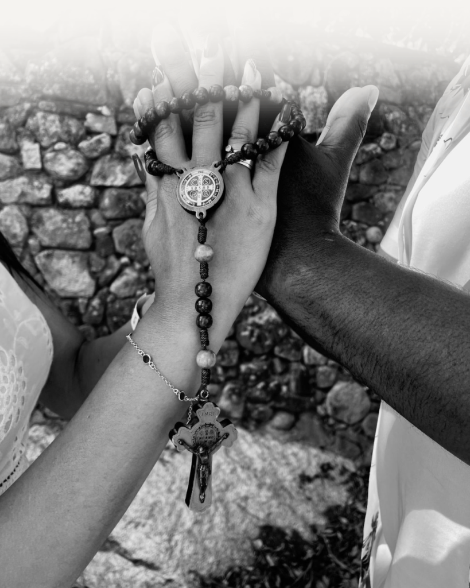

Deus mudou o teu caminho até juntares com o meu e guardou a tua vida separando-a para mim. Para onde fores, irei. Onde tu repousares, repousarei. Teu Deus será o meu Deus. Teu caminho o meu será.
-Rute 1:16-17

Com a benção de Deus e de seus pais:
Maria Aparecida Souza
Helena Costa Oliveira
José Carlos Souza
Antônio Pereira Oliveira

Convidamos você para nosso casamento...
A Realizar-se em...
01
Maio
de 2026, às 16h00


Local
Cerimônia: Igreja Matriz
Recepção: Espaço de Eventos Jardim
Clique nos ícones para
Interagir
Confirme sua presença Para nos presentear! Saiba como chegar!Esperamos você!
